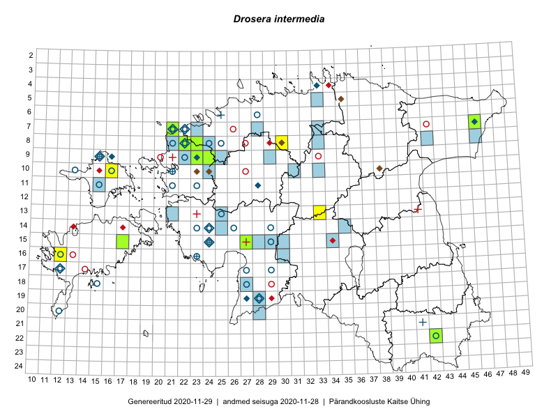

Drosera intermedia — vahelmine huulhein
Kaardile koondatud taksonid: Drosera intermedia Hayne (33)

Kaart põhineb 33 kirjel, neist:
vaatlusi 18
eksemplare 15
Kaasaegsed1 leiukohad asuvad 13 ruudus.
Andmed “Eesti taimede levikuatlasest”,2 sulgudes ruutude arv:3
● 1971–2005 (29)
○ 1921–1970 (27)
△ kuni 1920 (5)
+ hävinud (0)
? kaheldav (0)
Lisaruudud teistest andmebaasidest:4
ELF: 2006– . . . (43)
PKÜ: 2006– . . . (0)
ELF: 1971–2005 (14)
PKÜ: 1997–2005 (0)
| Ruut | Vaatleja(d) | Vaatlusaeg | Kirje PlutoFis |
|---|---|---|---|
| 10-16 | Ott Luuk | 2014-08-28 | ruut/ala: Drosera intermedia Hayne |
| 13-33 | Mari Metsoja, Jaak-Albert Metsoja | 2015-06-11 | ruut/ala: Drosera intermedia Hayne |
| 15-17 | Karin Kikas, Elle Rajandu | 2015-07-21 | ruut/ala: Drosera intermedia Hayne |
| 08-22 | Marju Erit | 2015-05-24 | ruut/ala: Drosera intermedia Hayne |
| 09-23 | Hanna-Eliisa Luts, Tõnu Ploompuu | 2015-07-16 | ruut/ala: Drosera intermedia Hayne |
| 08-22 | Marju Erit | 2015-05-24 | ruut/ala: Drosera intermedia Hayne |
| 08-22 | Toomas Kukk, Ilmar Uibopuu | 2017-07-29 | ruut/ala: Drosera intermedia Hayne |
| 07-21 | Helle Mäemets, Kadi Palmik | 2017-07-15 | ruut/ala: Drosera intermedia Hayne |
| 10-16 | Ott Luuk | 2014-08-28 | punkt: Drosera intermedia Hayne |
| 09-23 | Hanna-Eliisa Luts, Tõnu Ploompuu | 2015-07-16 | punkt: Drosera intermedia Hayne |
| 08-22 | Toomas Kukk, Ilmar Uibopuu | 2017-07-29 | punkt: Drosera intermedia Hayne |
| 08-22 | Toomas Kukk, Ilmar Uibopuu | 2017-07-29 | punkt: Drosera intermedia Hayne |
| 07-21 | Helle Mäemets, Kadi Palmik | 2017-07-15 | punkt: Drosera intermedia Hayne |
| 16-12 | Sirje Azarov, Mari Reitalu | 2018-08-27 | punkt: Drosera intermedia Hayne |
| 08-23 | Peedu Saar, Ott Luuk, Sten Mander, Kersti Tambets, Kristine Fenske | 2019-08-22 | ruut/ala: Drosera intermedia Hayne |
| 08-23 | Peedu Saar, Ott Luuk, Sten Mander, Kersti Tambets, Kristine Fenske | 2019-08-22 | punkt: Drosera intermedia Hayne |
| 08-23 | Peedu Saar, Ott Luuk, Sten Mander, Kersti Tambets, Kristine Fenske | 2019-08-22 | punkt: Drosera intermedia Hayne |
| 08-30 | Ott Luuk, Toivo Sepp | 2019-08-30 | punkt: Drosera intermedia Hayne |
| 08-22 | Anneli Palo | 2007-07-07 | TAA0077748: Drosera intermedia Hayne |
| 07-21 | Triin Reitalu, Mari Reitalu | 2016-07-09 | TAA0137799: Drosera intermedia Hayne |
| 09-23 | Jaak-Albert Metsoja | 2016-07-06 | TAA0134068: Drosera intermedia Hayne |
| 22-42 | Toomas Kukk, Tiit Hallikma, Johannes Kõdar | 2016-06-15 | TAA0138061: Drosera intermedia Hayne |
| 08-22 | Toomas Kukk, Ilmar Uibopuu | 2017-07-29 | TAA0141981: Drosera intermedia Hayne |
| 15-27 | Kadi-Liis Kesler, Tiina Elvisto | 2015-07-28 | TAA0119022: Drosera intermedia Hayne |
| 15-17 | Elle Rajandu, Karin Kikas | 2015-07-21 | TAA0143104: Drosera intermedia Hayne |
| 09-24 | Mari Reitalu, Eerik Leibak | 2017-08-11 | TAA0143122: Drosera intermedia Hayne |
| 07-46 | Peedu Saar | 2018-07-18 | TAA0145904: Drosera intermedia Hayne |
| 08-22 | Peedu Saar | 2019-07-24 | TAA0149613: Drosera intermedia Hayne |
| 08-22 | Peedu Saar | 2019-07-24 | TAA0149614: Drosera intermedia Hayne |
| 07-21 | Peedu Saar | 2019-07-24 | TAA0149616: Drosera intermedia Hayne |
| 08-22 | Peedu Saar | 2019-07-27 | TAA0149617: Drosera intermedia Hayne |
| 07-21 | Peedu Saar | 2019-08-15 | TAA0149634: Drosera intermedia Hayne |
| 08-23 | Peedu Saar, Ott Luuk | 2019-08-22 | TAA0149639: Drosera intermedia Hayne |
Kaasaegsed leiukohad (tähistatud värvitud ruutudega) põhinevad peamiselt 2014–2019 välitööandmetel. Väiksemal määral on andmebaasi kantud vanemaid leiuandmeid aastatest 2006–2013.↩︎
Kukk, T., Kull, T., Eesti taimede levikuatlas. Eesti Maaülikool, Põllumajandus- ja Keskkonnainstituut, Tartu, 2005.↩︎
NB! 2005. aasta atlase andmestikus katavad uuemad leiud vanemaid. Näiteks kui liik on ruudus registreeritud 1971–2005, siis pole võimalik öelda, kas ta oli sellest ruudust teada ka enne 1970. aastat. Vana atlase andmetel hävinud ja kaheldavaid leiukohti pole hilisemate (taas)leidude põhjal korrigeeritud.↩︎
Eestimaa Looduse Fondi (ELF) ja Pärandkoosluste Kaitse Ühingu (PKÜ) andmebaasid sisaldavad inventeeritud koosluste kirjeldusi ja liigiloendeid. Neist andmekogudest on kaardile lisatud lisatud vaid need ruudud, millest uue atlase andmekogus taksoni kohta kirjeid veel pole. Kõrvale on jäetud teadaolevalt kaheldavad määrangud. Kaartidel katavad uuema perioodi andmed vanemaid, PKÜ omad ELFi omi. Kattumise tõttu võib kaardil näha olla vähem mingi kategooria ruute kui legendis olev arv näitab. ELFi ja PKÜ andmed ei kajastu hetkel vaatluste tabelis ega ruutude liigiloendites.↩︎